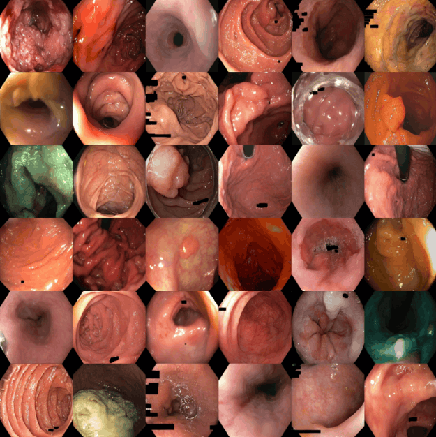
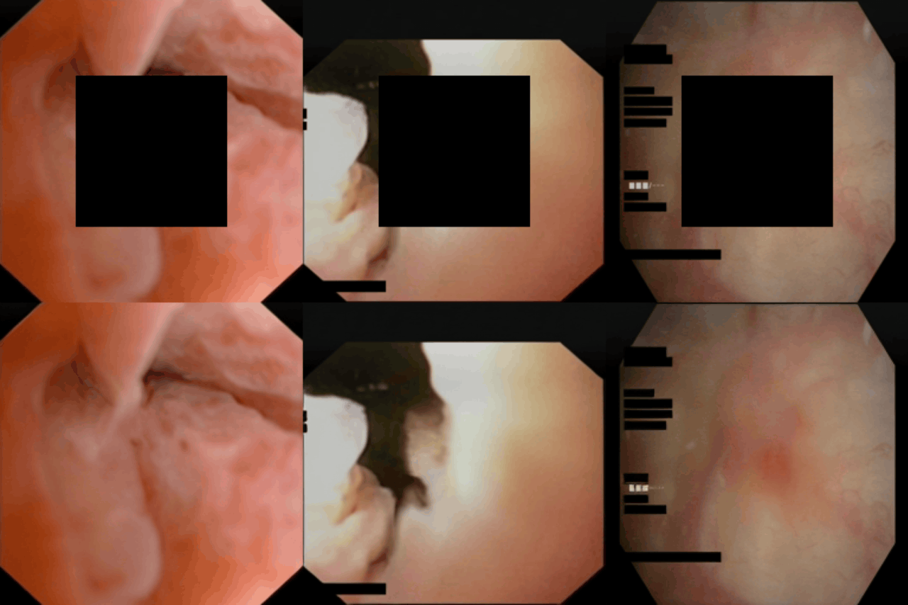
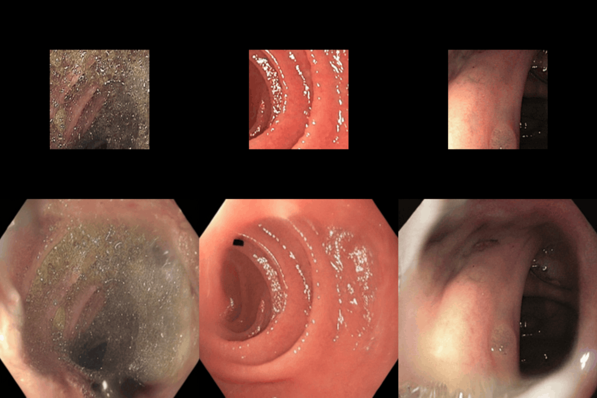

Developing foundation generative models for endoscopy is limited by the gap between natural and clinical images and the computational cost of training large Diffusion Transformers. Although representation alignment has improved efficiency in general computer vision, its role within the highly specialized endoscopic image space remains unclear. We introduce REVEAL (Representation-driven Endoscopic Visual Embedding Alignment), a foundation generative model trained on GastroNet-5M (GN-5M), a multicenter dataset of 5 million endoscopic frames.
Instead of depending on out-of-domain priors, REVEAL employs encoders pretrained directly on the endoscopic distribution to align diffusion latents with domain-specific visual features, preserving fine textures and intricate anatomical structures. Beyond image generation, REVEAL also serves as a powerful feature extractor; in multiple benchmarks, it delivers performance that is competitive with, and in several cases exceeds, endoscopic foundation models specifically tuned for classification tasks, while demonstrating strong representation robustness under realistic imaging corruptions.
REVEAL produces high-fidelity images and maintains robust structural coherence in latent-space edits such as inpainting and outpainting. This high-capacity backbone lowers the computational threshold for building specialized clinical tools, offering an open, versatile foundation for conditional synthesis, segmentation, and out-of-distribution detection in future intelligent gastroenterology systems. The code and model weights are publicly released.
REVEAL is a latent generative model that synthesizes high-fidelity endoscopic images by aligning the feature space of a Scalable Interpolant Transformer (SiT) with a specialized, pretrained vision encoder. The architecture operates within a compressed latent space, where an input image \(x\) is mapped to \(z = E(x)\) via a pretrained VAE encoder \(E\). The generative backbone is trained to reverse a stochastic interpolation process, while a Representation Alignment (REPA) strategy injects domain-specific knowledge into the student model by maximizing the cosine similarity between a pretrained teacher representation \(y_*\) and the student's hidden states \(h_t\).
Prevailing alignment strategies rely on general-purpose vision encoders trained on natural images, assuming that global semantic richness is the primary driver of synthesis quality. Endoscopic scenes, however, are characterized by subtle mucosal textures, specular reflections, and intricate anatomical morphologies, where global semantic labels provide insufficient signal. REVEAL instead grounds alignment in encoders pretrained directly on GN-5M, ensuring that the target representations are inherently aligned with the unique visual characteristics of endoscopic data.
To maximize the transfer of anatomical detail, REVEAL adopts the iREPA strategy, which introduces two refinements over standard REPA: a lightweight convolutional projection head that preserves the spatial relationships between adjacent patch tokens (instead of a point-wise MLP), and a spatial normalization layer applied to the teacher representations that increases the signal-to-noise ratio of local anatomical structures by trading off global information for spatial contrast.
The integrated framework supports two inference-time operational modes. During training, the model jointly optimizes a denoising loss and the representation-alignment term. Once trained, the system enables high-fidelity sampling by traversing the learned reverse SiT trajectory to synthesize images from noise through the VAE decoder. Furthermore, the frozen SiT blocks serve as a robust feature extractor, yielding high-dimensional patch descriptors extracted from intermediate transformer layers at \(t{=}0\) that are suitable for downstream clinical tasks such as classification.
REVEAL is pretrained on GN-5M, a large, multicenter dataset of 4,820,653 unlabeled endoscopic images collected from eight Dutch hospitals. Representation quality is evaluated via linear probing on two independent classification benchmarks: the public POLyp Artificial Recognition (POLAR) dataset, and a private Barrett's Esophagus neoplasia (BE) dataset enriched with subtle cases of early neoplasia. Robustness is further assessed on BE-C, a corrupted variant of the BE test set built from eight clinically realistic imaging corruptions (motion blur, defocus blur, overexposure, hue shift, saturation, contrast, sharpness, and brightness distortion) applied at randomized severities.
We systematically evaluate the REVEAL architecture by disentangling the influence of latent space design, teacher representations, and model scaling on both generative and discriminative performance. VAE latent space selection shows that SD2's compact 4-channel bottleneck is more easily modulated by the SiT backbone than higher-dimensional alternatives, yielding superior fidelity at lower cost. Target representation ablations show that the domain-specific DINOv3-B (GN-5M) teacher outperforms all alternatives, including general-purpose SAM2, DINOv2, and DINOv3. Scaling the SiT backbone from Small to Large substantially reduces FID, and training on the full 5M-image dataset yields the largest single improvement across all metrics, with gains tapering after roughly 200k iterations.
| VAE | Target Rep. | Arch. | Iters. | FID | BE | POLAR |
|---|---|---|---|---|---|---|
| — | — | JiT-B/16 | 150k | 28.10 | — | — |
| SD2 | — | SiT-B/2 | 150k | 13.55 | 0.853 | 0.646 |
| SD3 | — | SiT-B/2 | 150k | 14.22 | 0.871 | 0.646 |
| FLUX.1-dev | — | SiT-B/2 | 150k | 28.88 | 0.841 | 0.642 |
| FLUX.2-dev | — | SiT-B/2 | 150k | 14.46 | 0.824 | 0.638 |
| SD2 | SAM2 | SiT-B/2 | 150k | 10.98 | 0.855 | 0.623 |
| SD2 | DINOv2-B | SiT-B/2 | 150k | 10.51 | 0.872 | 0.638 |
| SD2 | DINOv3-B | SiT-B/2 | 150k | 10.78 | 0.855 | 0.629 |
| SD2 | DINOv2-B (GN-5M) | SiT-B/2 | 150k | 10.71 | 0.860 | 0.653 |
| SD2 | DINOv3-B (GN-5M) | SiT-B/2 | 150k | 10.18 | 0.865 | 0.682 |
| SD2 | DINOv3-B (GN-5M) | SiT-S/2 | 150k | 13.07 | 0.863 | 0.682 |
| SD2 | DINOv3-B (GN-5M) | SiT-L/2 | 150k | 9.33 | 0.881 | 0.684 |
| SD2 | DINOv3-B (GN-5M) | SiT-L/2 | 150k* | 5.43 | 0.905 | 0.763 |
| SD2 | DINOv3-B (GN-5M) | SiT-L/2 | 200k* | 5.37 | 0.906 | 0.768 |
| SD2 | DINOv3-B (GN-5M) | SiT-L/2 | 250k* | 5.32 | 0.904 | 0.773 |
We assess the semantic utility of REVEAL's features via linear probing on POLAR and BE. Despite being a generative model with no supervised signal, and operating on features from only the first 8 layers of a latent space compressed by a frozen, general-purpose SD2 VAE, REVEAL convincingly outperforms the endoscopy-specific EndoViT and Endo-FM foundation models, and surpasses all general-purpose encoders (SAM2, DINOv2, DINOv3) on both benchmarks. DINOv3 pretrained directly on GN-5M remains the strongest discriminative encoder overall.
| Model | Arch. | Resolution | BE | POLAR | ||
|---|---|---|---|---|---|---|
| AUC | AUPRC | AUC | AUPRC | |||
| SAM2 | ViT-B/16 | 1024 × 1024 | 0.583 | 0.463 | 0.684 | 0.913 |
| DINOv2 | ViT-B/14 | 518 × 518 | 0.772 | 0.673 | 0.661 | 0.898 |
| DINOv3 | ViT-B/16 | 256 × 256 | 0.765 | 0.695 | 0.737 | 0.926 |
| EndoViT | ViT-B/16 | 224 × 224 | 0.629 | 0.475 | 0.632 | 0.892 |
| Endo-FM | ViT-B/16 | 224 × 224 | 0.764 | 0.689 | 0.683 | 0.908 |
| DINOv2 (GN-5M) | ViT-B/14 | 336 × 336 | 0.818 | 0.779 | 0.790 | 0.948 |
| DINOv3 (GN-5M) | ViT-B/16 | 256 × 256 | 0.835 | 0.790 | 0.808 | 0.947 |
| REVEAL | SiT-L/2 | 256 × 256 | 0.786 | 0.728 | 0.758 | 0.935 |
Under BE-C, the corrupted evaluation set, REVEAL again outperforms all general-purpose encoders and substantially surpasses the endoscopy-specific EndoViT and Endo-FM models, confirming that its representations encode clinically meaningful structure that generalizes under imaging artifacts. EndoViT in particular degrades catastrophically under corruption, despite being domain-specific. Since REVEAL is evaluated at the standard noise level \(t=0\), sampling features from intermediate diffusion timesteps — which naturally denoise corrupted inputs — is a promising direction for further robustness gains without any retraining.
| Model | Arch. | Resolution | AUC | AUPRC |
|---|---|---|---|---|
| SAM2 | ViT-B/16 | 1024 × 1024 | 0.524 | 0.385 |
| DINOv2 | ViT-B/14 | 518 × 518 | 0.724 | 0.609 |
| DINOv3 | ViT-B/16 | 256 × 256 | 0.744 | 0.663 |
| EndoViT | ViT-B/16 | 224 × 224 | 0.524 | 0.400 |
| Endo-FM | ViT-B/16 | 224 × 224 | 0.692 | 0.588 |
| DINOv2 (GN-5M) | ViT-B/14 | 336 × 336 | 0.810 | 0.774 |
| DINOv3 (GN-5M) | ViT-B/16 | 256 × 256 | 0.814 | 0.771 |
| REVEAL | SiT-L/2 | 256 × 256 | 0.754 | 0.679 |
Unconditional samples from REVEAL (SiT-L/2), generated with a Heun solver using 50 function evaluations, capture the intricate light reflections and mucosal textures typical of the GN-5M distribution, with diversity across anatomical regions, lesion morphologies, and imaging conditions. As a spatial-robustness probe rather than a clinical benchmark, we additionally run inpainting and outpainting via resampling, following RePaint, without any architectural modification or task-specific finetuning. REVEAL reconstructs missing anatomical regions and extends the visible field of view while preserving structural continuity, indicating that alignment with a specialized teacher captures gastrointestinal morphology beyond the pixel level.

Unconditional samples exhibit realistic mucosal texture and specular highlights.

Inpainting reconstructs masked regions.

Outpainting extends the visible field of view.
REVEAL serves as a foundation generative model for endoscopy, trained at a massive multicenter scale that is typically inaccessible to most research groups. The architecture can be scaled along resolution — the SD2 VAE natively supports finer inputs — and model capacity, following the trends observed in the component analysis. The publicly released weights provide a strong initialization point for both directions, as well as for downstream clinical applications: conditional synthesis for targeted pathology generation and rare lesion augmentation, segmentation via generative features or Symmetrical Flow Matching, generative classifiers for diagnostic tasks, and out-of-distribution detection through likelihood estimation over the learned distribution.